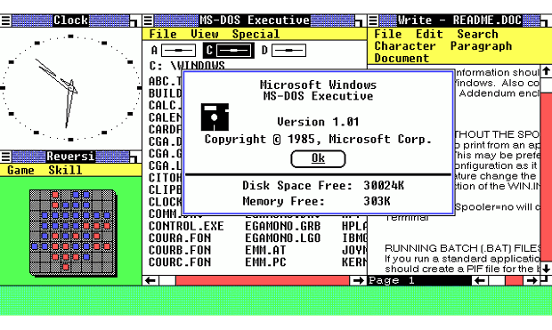
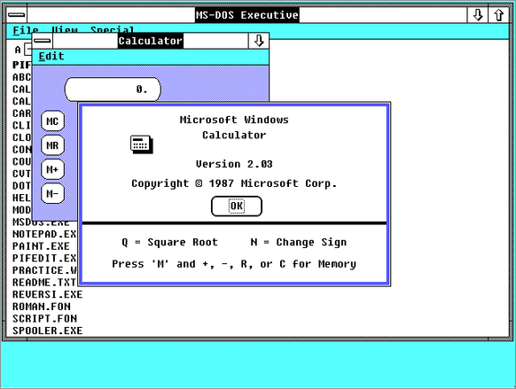
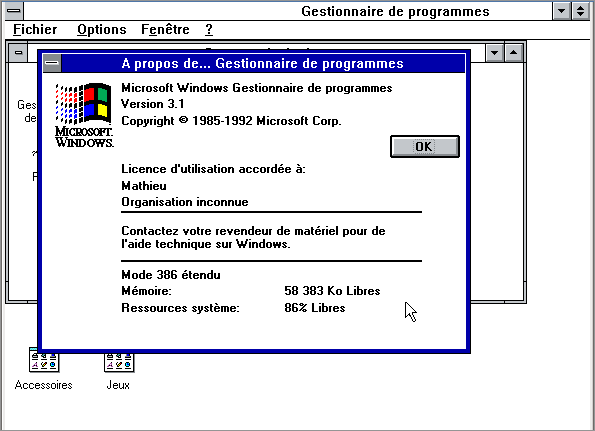
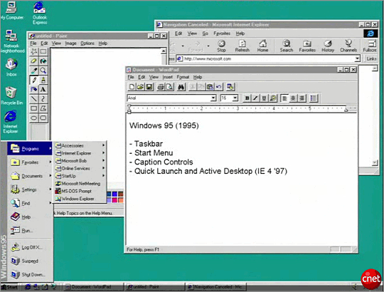
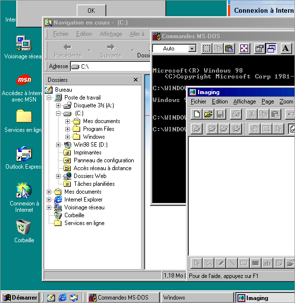
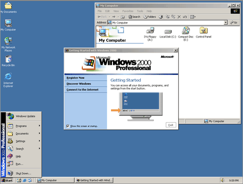
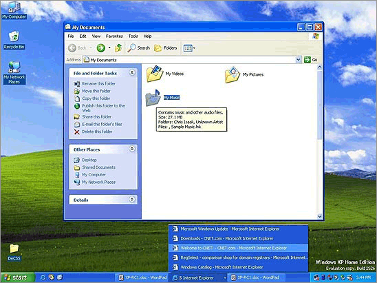
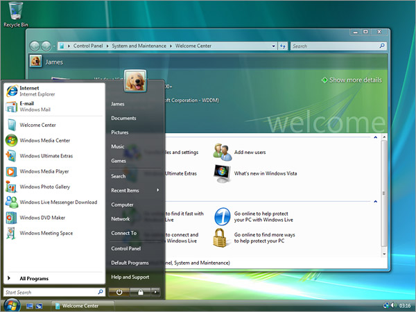
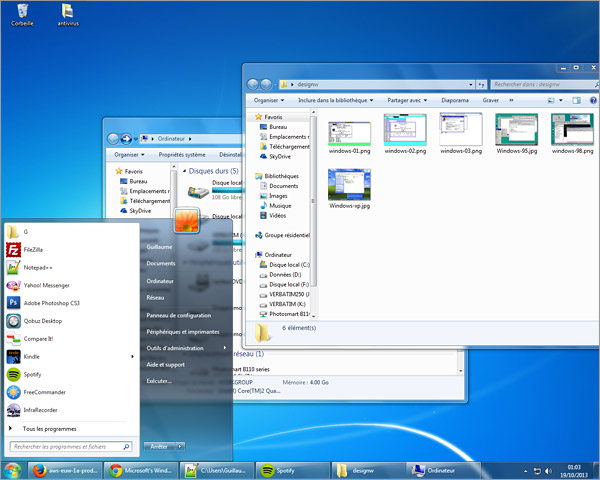
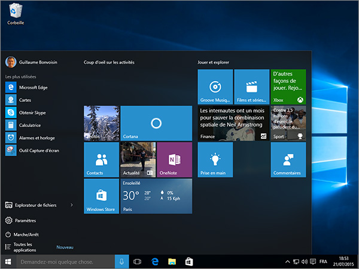

Versions
Microsoft présentait Windows 1.01 le 20 novembre 1985
Deux ans après, le 9 decembre 1987 Microsoft sort Windows 2.0
Trois ans après, Microsoft sort Windows 3.X
Le 24 août 1995, Windows 95 fait son apparition
le 25 juin 1998, Microsoft sort Windows 98
Microsft présentait le 17 février 2000 Windows 2000
Le 24 août 2001, Microsoft présentait Windows XP
En novembre 2006, Windows Vista sort au grand public
le 22 juillet 2009, Microsoft sort Windows 7
Microsoft présente la première version de Windows 8 le 26 octobre 2012

Windows 10, le dernier systeme en date de Microsft fait son apparition le 29 juillet 2015
